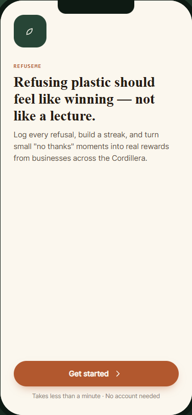

RefuseMe
A little less plastic.
A little more purpose.

UX design / Clickable prototype
Small refusals.
Better habits.
RefuseMe makes refusing single-use plastic feel rewarding. Designed for young people in Baguio and the Cordillera, the experience connects daily pledges, refusal logging, progress, and local rewards.
Explore onboarding, log a refusal, and browse rewards. This concept uses simulated data; accounts, AI coaching, and real reward redemption are not connected.
Try RefuseMe ↗